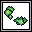
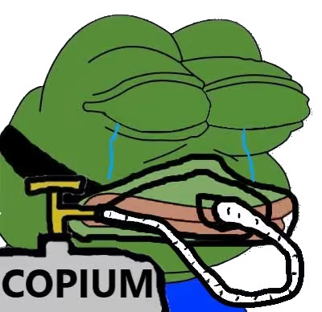
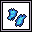
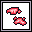
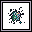
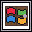

Ores & Ancient Tech#
Ores#
Ores are crucial in this game. Not only do they support your respective company’s goal of monetary gain and ruling the technological world, but they also increase your game points! Here are the different ores you can mine.
Copium#
{kind=link}
A very basic ore that’s a commodity for every MOB-BOT. Everyone wants Copium. Who doesn’t want Copium?  Mining this ore will yield 20 game points, regardless of company affiliation.
{kind=link}
Lambdium#
{kind=link}
Lambdium is the favored ore by Church Inc. Lambdium is what powers their MOB-BOTs and allows them to continue research for investigating something called ‘anonymous functions,’ whatever those are.
If you are affiliated with Church Inc., any Lambdium you mine will yield 80 game points! That’s a steal!
If you are affiliated with Turing Co., the Lambdium you mine will be worth 24 game points. It’s still valuable, but it’s not what you want. It’s (barely) better than Copium, though!
Turite#
{kind=link}
Turite is the favored ore by Turing Inc. Turite will power Turing Machine-based MOB-BOTs and improve their systems to become more turing complete! Fascinating.
Turing Co. will yield 80 game points for every Turite they cash in.
If you are affiliated with Church Inc., Turite will yield 24 game points for you. That’s still worthwhile, but again, it’s (barely) better than Copium.
Ancient Tech#
{kind=link}
In The Quarry, there is another strange material called Ancient Tech. When refined, its shape is oddly reminiscent of something from the distant past… 
{kind=link}
Regardless, Ancient Tech is unique in that it doesn’t yield game points, but science points. 10 science points are gained for each Ancient Tech that is cashed in. These points will allow you to upgrade your MOB-BOT. These upgrades include faster movement speed, placing dynamite, placing traps, and a few other things. Upgrades are explained more in MOB-BOT.
For more information on Ores and Ancient Tech scoring, visit Scoring.